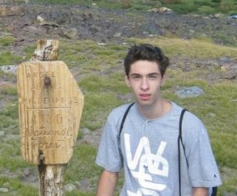

<!DOCTYPE html>
<html lang="en-US"></html>
<head>
  <title>Forrest Reiland's Portfolio Page</title>
  <link href="css/bootstrap.css" rel="stylesheet" type="text/css">
  <link href="css/styles.css" rel="stylesheet" type="text/css">
</head>

<body>
<div class="container">
  <div class="jumbotron">
    <h1>Welcome to Forrest Reiland's Portfolio!</h1>
  </div>
  
  <h2>Here are some of my most recent projects:</h2>
  <ol>
    <li>A webpage for a vacation destination</li>
      <p>This webpage lists hypothetical vacation packages for <em>Puebla, Mexico.</em> It contains images and basic styling using boostrap. Technolgies used are HTML, CSS, Boostrap and Markdown. Click <a href="https://github.com/freiland/vacation_site.git">here</a> to view the page</p>
    <li>A blogpost for the <strong>Sandy</strong> River</li>
      <p>This webpage is a blogpost about the Sandy River. <span class="">The blogpost aims to explore the different ecosystems of the river.</span> The webpage was designed using the css box model. Technologies used are HTML and CSS. Click <a href="https://github.com/freiland/blogging-site.git">here</a> to view the page</p>
    
    <li>An online resume for me!</li>
      <p>This page is an up to date resume for me. The technologies used are HTML and CSS. Click <a href="https://github.com/freiland/resume.git">here</a> to view the page</p>

  </ol>

  <h2>About Me!</h2>
  <h3>Education</h3>
  <ul>
    <li>The University of Arizona, 2017</li>
    <li>Epicodus, Portland,Oregon 2021</li>
  
  </ul>
  <h3>Job Experience</h3>
  <ul>
    <li>CNC Programmer/Project Manager - Desert Metal Works, INC</li>
    <li>Legal Intern - Douglas B. Levy, PC</li>
    <li>Bellman - Arizona Inn</li>

  </ul>

  <h2>Skills and Hobies</h2>
  <p>My hobbies currently involve playing basketball with my roomates, listening to classic rock, or cooking!</p>

  <h3>Technical Skills</h3>
  <ul>
    <li>Python</li>
    <li>Javascript</li>
    <li>HTML and CSS</li>
    <li>Markdown</li>
    <li>MatLab</li>
    <li>Autodesk Civil</li>
    
  </ul>

  

</div>
</body>